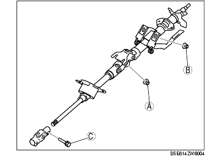

Workshop Manual ➭ STEERING ➭ POWER STEERING ➭ STEERING WHEEL AND COLUMN REMOVAL/INSTALLATION
STEERING WHEEL AND COLUMN REMOVAL/INSTALLATION
id061400803600
{: #wp1059778}
Warning
• Handling the air bag module improperly can accidentally deploy the air bag module, which may seriously injure you. Read AIR BAG SYSTEM WARNINGS before handling the air bag module. (See SERVICE WARNINGS.) (See SERVICE CAUTIONS.)
-
Remove in the order indicated in the table.
-
Install in the reverse order of removal.
-
If the steering lock component of a vehicle equipped with the advanced keyless system is replaced, perform the following procedure after installation.
• Without immobilizer system
- Steering lock unit programming (See STEERING LOCK UNIT ID CODE REGISTRATION [WITH ADVANCED KEYLESS SYSTEM].)
• With immobilizer system
- Immobilizer system resetting (See IMMOBILIZER SYSTEM COMPONENT REPLACEMENT/KEY ADDITION AND CLEARING [WITH ADVANCED KEYLESS SYSTEM].)
|
Air bag module {: #wp1059942} (See DRIVER-SIDE AIR BAG MODULE REMOVAL/INSTALLATION.) {: #wp1060006} |
|
|---|---|
|
2 {: #wp1059980} |
Locknut {: #wp1059983} |
|
3 {: #wp1059987} |
Steering wheel {: #wp1059990} (See Steering Wheel Removal Note.) {: #wp1060040} (See Steering Wheel Installation Note.) {: #wp1060054} |
|
4 {: #wp1060066} |
Column cover {: #wp1060069} |
|
5 {: #wp1060089} |
Clock spring {: #wp1060092} (See CLOCK SPRING REMOVAL/INSTALLATION.) {: #wp1060114} |
|
6 {: #wp1060126} |
Combination switch {: #wp1060129} |
|
7 {: #wp1060151} |
Lower panel {: #wp1060154} |
|
8 {: #wp1060176} |
Steering shaft {: #wp1060179} (See Steering Shaft Installation Note.) {: #wp1060203} |
|
9 {: #wp1060215} |
Dust cover {: #wp1060218} |
|
10 {: #wp1060242} |
Steering lock mounting bolts {: #wp1060245} (See Steering Lock Mounting Bolts Removal Note.) {: #wp1060271} (See Steering Lock Mounting Bolts Installation Note.) {: #wp1060285} |
|
11 {: #wp1060298} |
Steering lock component {: #wp1060301} |
Steering Wheel Removal Note
Caution
• Do not try to remove the steering wheel by hitting the shaft with a hammer. The column will collapse.
-
Set the vehicle in the straight-ahead position.
-
Remove the steering wheel using a suitable puller.
Steering Lock Mounting Bolts Removal Note
- Make a groove in the heads of the steering lock mounting bolts using a chisel and a hammer.{: #wp1060419}
-
Remove the bolts using a screwdriver.
-
Disassemble the steering lock component.
Steering Lock Mounting Bolts Installation Note
-
Assemble the steering lock component to the steering shaft.
-
Verify that the lock operates correctly.
-
Install new steering lock mounting bolts.
-
Tighten the bolts until the heads break off.{: #wp1060506}
Steering Shaft Installation Note
Caution
• Do not apply a shock in the axial direction of the shaft.
- Lock the tilt lever.{: #wp1060561}

-
Tighten nut A.
-
Tighten nut B.
-
Tighten bolt C.
Steering Wheel Installation Note
- Make sure the wheels in the straight-ahead position, and install the steering wheel.